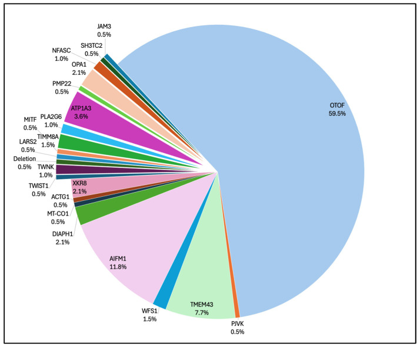
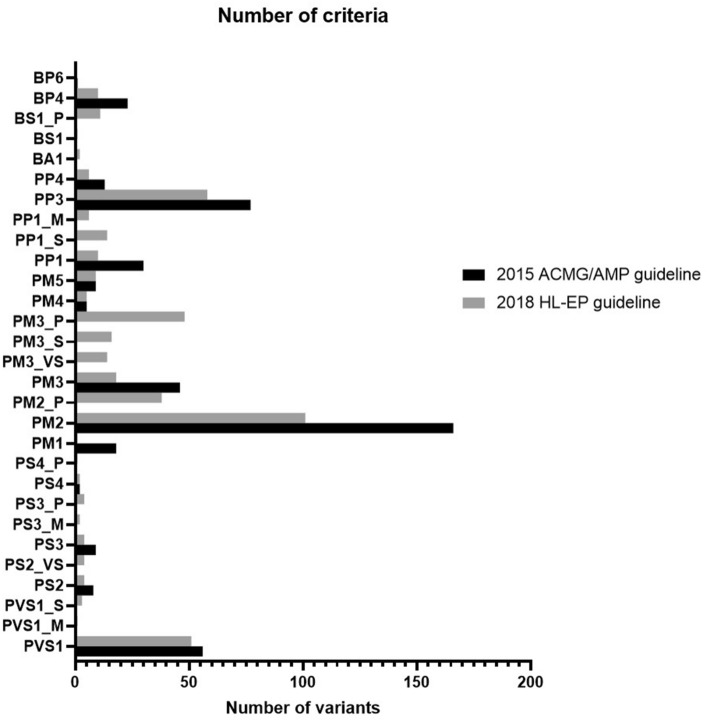
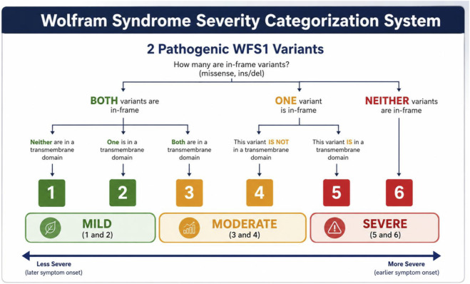

479 — Tư vấn di truyền & xử lý biến thể VUS trong teo thị/điếc di truyền (OPA1/WFS1) / Genetic counselling and variant-of-uncertain-significance workup in hereditary optic atrophy with deafness
Tags: pattern:teo-thi pattern:diec-thi-giac vung:than-kinh-thi anatomy:co-dinh-thinh protocol:NGS-panel protocol:OCT-RNFL-GCL protocol:audiometry-ABR score:ACMG-AMP-2015
Mức chắc chắn (certainty): tổng hợp y văn (literature synthesis) — nhóm tự biên từ y văn mở 2022–2026: nghiên cứu 169 biến thể/135 bệnh nhân điếc (Sci Rep 2022, CC BY 4.0, PMC9304357), hệ thống phân độ nặng theo kiểu gen Wolfram (Front Genet 2026, CC BY 4.0, PMC13412279), tổng quan bệnh ty thể–mắt (Int J Mol Sci 2026, CC BY 4.0, PMC13410010), tổng quan gen gây điếc tiếp âm (J Clin Med 2026, CC BY 4.0, PMC13258488) và cohort 18.475 người điếc (Genes 2026, CC BY 4.0, PMC13025685).
Vì sao bài này quan trọng: bài 437 đã dạy nhận diện "teo thị + điếc" và ghi rõ 5/8 biến thể OPA1 trong cohort điếc là VUS. Nhưng trên thực tế, bác sĩ nhận về một tờ kết quả ghi "OPA1 c.XXXX G>A — Variant of Uncertain Significance" và phải trả lời 4 câu: có bệnh không, con cái bao nhiêu phần trăm, có làm xét nghiệm trước sinh được không, bao giờ xét nghiệm lại. Trả lời sai theo hướng nào cũng nguy hiểm: gán bệnh → lo lắng/thủ thuật oan; gán lành → bỏ sót đái tháo đường của Wolfram hoặc bỏ theo dõi mắt kia.
1. Tổng quan — vì sao một biến thể "không rõ ý nghĩa" lại sinh ra, và ngưỡng nào biến nó thành bệnh
- VUS không phải một chẩn đoán, mà là một trạng thái bằng chứng. Khung ACMG/AMP 2015 xếp biến thể thành 5 mức: bệnh (P), có khả năng bệnh (LP), chưa rõ ý nghĩa (VUS), có khả năng lành (LB), lành (B). Mỗi bằng chứng có điểm: rất mạnh 8, mạnh 4, trung bình 2, hỗ trợ 1; tổng điểm ≥ 10 = P, 6–9 = LP, 0–5 = VUS, −1 đến −6 = LB, ≤ −7 = B (khung điểm ClinGen).
- TẠI SAO VUS tồn tại (không phải vì lab kém):
- Bệnh hiếm → ít quan sát. OPA1 chỉ chiếm 8/18.475 (0,043%) proband trong một cohort điếc lớn; gặp lại cùng biến thể ở người thứ hai là chuyện may mắn.
- Gen hiếm, đa dạng biến thể. OPA1 có hiệu ứng phụ thuộc domain: biến thể missense vùng GTPase gắn với DOA-plus/điếc tiếp âm (6/7 ca trong cohort AN), còn truncating thường chỉ teo thị — nên cùng "missense" không cùng nghĩa.
- Dữ liệu tần số không đại diện. Một biến thể "không có trong gnomAD" ở người Việt có thể là đa hình phổ biến của quần thể chưa được đưa vào cơ sở dữ liệu → PM2 (vắng mặt ở quần thể chứng) là tiêu chí bị lạm dụng nhất.
- Kiểu hình chồng lấp. "Teo thị + điếc" gặp ở OPA1, WFS1, OTOF, AIFM1… nên tiêu chí PP4 (kiểu hình đặc hiệu) yếu, không đủ một mình.
- Bằng chứng định lượng về VUS trong thực hành (169 biến thể/51 gen điếc):
- Theo ACMG/AMP 2015: 83/169 = 49,11% là VUS; theo hướng dẫn chuyên khoa HL-EP 2018: 77/169 = 45,56% — hướng dẫn chuyên khoa không làm giảm VUS, chỉ phân tầng lại.
- 28,40% (48/169) biến thể đổi mức khi áp hướng dẫn chuyên khoa; 22,49% (38/169) được nâng mức.
- Sau khi hội đồng chuyên gia xem lại: 12/83 (14,45%) VUS chuyển thành P/LP — tức cứ ~7 VUS có 1 cái thành bệnh; không được "đóng hồ sơ" với VUS.
- PM2 là tiêu chí được áp nhiều nhất; PP3 mất hiệu lực ở 24,68% (19/77) biến thể khi siết tiêu chí tin học.
- Ngưỡng định lượng phải nhớ (dùng khi đọc báo cáo gen):
- BA1 (lành, độc lập): tần số alen > 5% ở quần thể.
- BS1: tần số cao hơn tần số bệnh kỳ vọng; PM2: vắng mặt ở quần thể chứng (nay dùng mức hỗ trợ, không phải trung bình).
- PP3/BP4 tin học: dùng ngưỡng đã hiệu chuẩn (ví dụ REVEL ≥ 0,773 cho PP3; ≤ 0,290 cho BP4); công cụ splice như SpliceAI chỉ là bằng chứng hỗ trợ, ngưỡng thực hành thường dùng ≥ 0,2 nhưng chưa có cutoff thống nhất — cần tra bản gốc ClinGen SVI.
- Di truyền: OPA1 và WFS1 trội = 50% cho mỗi con; WFS1 lặn (Wolfram) = 25%; anh/chị em cùng bố mẹ khỏe mạnh giúp loại trừ/ủng hộ (mỗi người khỏe mạnh có kiểu gen nghi vấn làm tăng bằng chứng BS4).
2. Mẫu hình + gamut theo gen và kiểu di truyền
- Câu hỏi lọc 1 — gen nào và di truyền nào? Teo thị đơn độc/trội trong gia đình → OPA1 (AD); điếc tần số thấp sớm + teo thị muộn → WFS1 trội; ĐTĐ + đái tháo nhạt + teo thị + điếc → WFS1 lặn (Wolfram); trẻ điếc tiếp âm đơn độc → OTOF (AR, 59,5%), AIFM1 (X-linked, 11,8%).
- Câu hỏi lọc 2 — biến thể có "đúng chỗ" không? Với OPA1: missense vùng GTPase nguy cơ DOA-plus cao hơn; với WFS1: vị trí trong domain xuyên màng quyết định phân độ nặng (Hình 1 mục 3).
- Gamut "teo thị/điếc di truyền" theo gen (tần suất trong điếc tiếp âm):
| Gen | Di truyền | Kiểu hình lõi | Tỷ lệ trong AN | Hệ quả tư vấn |
|---|---|---|---|---|
| OTOF | Lặn (AR) | Điếc tiếp âm nặng, khởi phát sớm; cấy ốc tai kết quả tốt | 59,5% | 25% cho con; tiên lượng cấy tốt |
| AIFM1 | X-linked | ANSD khởi phát muộn, có thể kèm thần kinh | 11,8% | Nam 50% nếu mẹ mang; nữ mang |
| TMEM43 | AD/AR tùy biến thể | ANSD ± bệnh cơ tim | 7,7% | Cần tầm soát tim nếu AD |
| ATP1A3 | AD | CAPOS (ataxia, teo thị, điếc) | 3,6% | 50%; kiểu hình đặc hiệu |
| OPA1 | AD | ADOA/DOA+ (teo thị + ANSD, myopathy, ataxia) | 2,1% | 50%; 5/8 biến thể trong cohort điếc là VUS |
| WFS1 | AR (Wolfram) / AD (Wolfram-like) | ĐTĐ, đái tháo nhạt, teo thị, điếc | 1,5% | 25% hoặc 50%; phân độ nặng theo kiểu gen |

*Tỷ lệ các gen gây điếc tiếp âm (ANSD) trong tổng quan hệ thống: OTOF 59,5%, AIFM1 11,8%, TMEM43 7,7%, ATP1A3 3,6%, OPA1 2,1%, WFS1 1,5% — "teo thị + điếc" là một phần nhỏ của gamut, nên VUS ở OPA1/WFS1 phải đọc trong bối cảnh kiểu hình.*3. Bảng so sánh phân biệt (ma trận đối chiếu)
| Thực thể | Dữ liệu điển hình | Chốt vào (rule-in) | Chốt loại (rule-out) | Gợi ý xác nhận |
|---|---|---|---|---|
| OPA1 — P/LP (AD) | Teo thị hai bên nhợt thái dương, RNFL/GCL mỏng; điếc ANSD; tiền sử gia đình AD | Biến thể LOF/missense GTPase đã phân loại P/LP + kiểu hình khớp + phân ly trong gia đình | Chỉ có VUS + không ai khác trong nhà bị → chưa kết luận | NGS panel; CNV/MLPA OPA1; OCT RNFL/GCL; ERG |
| OPA1 — VUS | Cùng kiểu hình nhưng bằng chứng chưa đủ | Phân ly rõ (PP1) + de novo đã xác nhận (PS2) + chức năng bất thường (PS3) | Tần số quần thể cao (BA1/BS1) + người khỏe mang cùng biến thể | Giải trình tự gia đình; RNA/minigene nếu splice; thử nghiệm chức năng |
| WFS1 — hai biến thể P/LP (AR, Wolfram) | ĐTĐ không tự miễn + đái tháo nhạt + teo thị + điếc | 2 biến thể P/LP ở hai alen (in trans) + ≥ 2 triệu chứng lõi | Chỉ 1 biến thể P/LP + 1 VUS → chưa đủ chẩn đoán phân tử | NGS WFS1; giải trình tự bố mẹ để xác định pha; glucose/osmolality |
| WFS1 — một biến thể P/LP (AD, Wolfram-like) | Điếc tần số thấp sớm, teo thị muộn, thị lực ổn định | Biến thể AD đã biết + điếc sớm + tiền sử gia đình | ĐTĐ + đái tháo nhạt nặng → nghĩ thể lặn | NGS WFS1; audiometry; OCT |
| WFS1 — VUS | Như trên nhưng chưa đủ bằng chứng | Phân ly + tần số cực thấp + kiểu hình đặc hiệu (điếc tần số thấp) | Không phân ly + gặp ở người khỏe | Giải trình tự gia đình; không dùng để phân độ nặng |
| Đa hình lành (benign polymorphism) | Biến thể missense cùng gen, người mang khỏe mạnh | BA1 (> 5%) hoặc BS1/BS2 + không phân ly | Phân ly hoàn hảo + chức năng bất thường | Tra gnomAD/ClinVar; giải trình tự người nhà |
| LHON (mtDNA) | Mất thị lực cấp tuần tự, nam trẻ, đĩa phù nhẹ rồi teo | 3 đột biến 11778/14484/3460 + tiền sử bên mẹ | Điếc + tiến triển nhiều năm → OPA1/WFS1 | mtDNA; không áp ACMG như gen nhân (heteroplasmy) |
| Teo thị do độc chất | Teo thị hai bên, tiền sử ethambutol/rượu–thuốc lá/thiếu B12 | Ngừng thuốc → cải thiện; B12 thấp | Điếc ANSD + gia đình AD → di truyền | Hỏi thuốc, B12, homocysteine |
4. Protocol xét nghiệm — từ VUS đến quyết định, và xét nghiệm trước sinh
Bước 1 — chọn xét nghiệm theo kiểu hình (không làm ngược):
- Panel gen mục tiêu (OPA1, WFS1, OTOF, AIFM1, mtDNA, các gen AN) là bước đầu; WES/WGS khi panel âm mà kiểu hình mạnh.
- Bắt buộc tìm CNV/deletion ở OPA1 (deletion toàn gen/exon không bắt được bằng giải trình tự thông thường).
- mtDNA riêng khi nghi LHON; không gộp vào panel gen nhân.
- Ghi rõ kiểu hình gửi xét nghiệm (teo thị? ANSD? ĐTĐ?) — lab dùng PP4 và chọn gen.
Bước 2 — xử lý một VUS (thứ tự bằng chứng):
- Tần số: gnomAD/ClinVar — BA1 > 5%, BS1 nếu cao hơn tần số bệnh, PM2 chỉ mức hỗ trợ.
- Tin học: REVEL/SpliceAI theo ngưỡng hiệu chuẩn (PP3/BP4) — không dùng một công cụ để kết luận.
- Phân ly: giải trình tự bố mẹ/anh chị em — PP1 (mỗi gia đình phân ly tăng mức) hoặc BS4 (không phân ly).
- De novo: xác nhận quan hệ cha–mẹ trước khi dùng PS2.
- Chức năng: RNA/minigene cho splice, nguyên bào sợi cho OPA1 (dung hợp ty thể), tế bào cho WFS1 — PS3/BS3.
- Kiểu hình: PP4 chỉ khi kiểu hình đặc hiệu (điếc tần số thấp của WFS1 trội; ANSD + teo thị của OPA1).
- Gửi lại ClinVar + hội đồng gen (variant curation); đánh giá lại sau 1–2 năm vì 14,45% VUS đổi mức sau khi có thêm dữ liệu.

PM2 (vắng mặt ở quần thể chứng) là tiêu chí áp nhiều nhất (gần 170/169 biến thể ở 2015) và giảm mạnh khi siết; PP3 lại tăng. Bài học: VUS thường được "đỡ" bằng PM2 + PP3 — hai loại bằng chứng yếu nhất, không đủ để gọi bệnh.Bước 3 — tư vấn sinh sản và xét nghiệm trước sinh:
- Nguy cơ tái phát: OPA1/WFS1 trội = 50%; Wolfram lặn = 25%; de novo vẫn có nguy cơ germline mosaicism (thấp, nhưng phải nói).
- Khi biến thể đã P/LP: CVS 11–13 tuần 6 ngày hoặc chọc ối ≥ 15 tuần; PGT-M (chẩn đoán di truyền trước làm tổ) là lựa chọn; NIPT không dùng cho bệnh đơn gen.
- Khi biến thể là VUS: không dùng VUS đơn độc để quyết định chấm dứt thai kỳ/PGT — cần hội đồng + bằng chứng bổ sung; nếu thai kỳ gấp, tư vấn theo nguy cơ kiểu hình và theo dõi sau sinh (OCT/audiometry).
- Sau sinh: OCT RNFL/GCL + audiometry/ABR (phát hiện ANSD); với WFS1: glucose/HbA1c, osmolality niệu, siêu âm thận (bài 437).
flowchart TD
A[Ket qua: gen OPA1 hoac WFS1 co bien the] --> B{Bien the da P hoac LP?}
B -->|Co| C[Chan doan phan tu: tu van 50 phan tram hoac 25 phan tram - CVS hoac PGT-M]
B -->|Khong - VUS| D[Kiem tra tan so gnomAD va ClinVar]
D --> E{Tan so cao hon 5 phan tram?}
E -->|Co| F[Xep vao lanh BA1 - khong dung de chan doan]
E -->|Khong| G[Danh gia PP3 BP4 theo nguong hieu chuan - giai trinh tu gia dinh]
G --> H{Co phan ly ro rang?}
H -->|Co| I[Nang muc PP1 - hoi dong gen va gui ClinVar]
H -->|Khong| J[Giu VUS - theo doi kieu hinh 6-12 thang - danh gia lai 1-2 nam]
I --> K{Du bang chung de goi P/LP?}
K -->|Co| C
K -->|Khong| J
J --> L[Khong dung VUS don doc de PGT hoac cham dut thai ky]
5. Biến thể bình thường và cạm bẫy
- Cạm bẫy 1 — "VUS = có bệnh". Gán nhãn sai gây lo lắng, mổ/cấy ốc tai không cần, và loại trừ oan các nguyên nhân khác (ethambutol, B12, glaucoma). VUS không phải chẩn đoán.
- Cạm bẫy 2 — "VUS = lành". Với WFS1, bỏ theo dõi nghĩa là bỏ sót đái tháo đường/đái tháo nhạt; với OPA1, bỏ theo dõi mắt còn lại/điếc tiến triển. 14,45% VUS sẽ thành P/LP → phải hẹn đánh giá lại.
- Cạm bẫy 3 — PM2 + PP3 = "đủ bệnh". Đây là hai bằng chứng yếu (1 + 1 = 4 điểm theo khung điểm, vẫn < 6 ngưỡng LP). Đừng để báo cáo lab "gợi ý bệnh" thay thế hội đồng.
- Cạm bẫy 4 — 1 P + 1 VUS ở gen lặn. Với WFS1, cần hai alen bệnh; pha (in trans) phải chứng minh bằng giải trình tự bố mẹ — nếu cùng một alen thì không giải thích được bệnh.
- Cạm bẫy 5 — phân độ nặng Wolfram trên VUS. Hệ thống phân độ (Hình dưới) chỉ áp dụng khi có 2 biến thể P/LP; dùng nó để tiên lượng khi một alen còn VUS là suy diễn quá mức.
- Cạm bẫy 6 — bỏ qua CNV. Giải trình tự âm không loại trừ deletion OPA1; phải có MLPA/CNV calling.
- Cạm bẫy 7 — dùng NIPT cho bệnh đơn gen. NIPT sàng lọc lệch bội/thai nhi, không thay thế CVS/chọc ối cho OPA1/WFS1.
- Cạm bẫy 8 — tần số quần thể Việt Nam chưa có. Một biến thể "lạ" có thể là đa hình dân tộc; thiếu dữ liệu không đồng nghĩa với gây bệnh — ghi rõ "chưa rõ, cần tra" thay vì suy đoán.

Phân độ chỉ dùng khi có 2 biến thể WFS1 P/LP: in-frame/không, vị trí trong domain xuyên màng → 6 mức, gộp 3 tầng nhẹ/trung bình/nặng. Tuổi khởi phát ĐTĐ trung vị 9,0 / 6,5 / 4,6 tuổi; teo thị 14,0 / 11,0 / 9,0 tuổi; không dự báo được điếc và đái tháo nhạt.6. Tự lượng giá — Blind Quiz
Ca 1 — Trẻ 4 tuổi điếc tiếp âm, không có teo thị rõ. Panel gen trả về một biến thể OPA1 dạng missense "VUS". Gia đình hỏi: "Có phải bệnh di truyền của cháu không?"
- Hỏi: 3 thông tin nào phải thu thập trước khi trả lời? Khi nào được phép dùng VUS để tư vấn sinh sản?
Bấm để hiện đáp án (findings + chẩn đoán)
- Phải thu thập: (1) tần số biến thể trên gnomAD/ClinVar theo quần thể; (2) giải trình tự bố mẹ + anh chị em để xem phân ly/de novo; (3) kiểu hình định lượng — OCT RNFL/GCL, audiometry/ABR, ERG (tìm DOA-plus), khám thần kinh–cơ.
- Vì sao OPA1 khó: biến thể missense vùng GTPase mới gắn với ANSD/DOA-plus; missense ngoài vùng này có thể lành. 5/8 biến thể OPA1 trong cohort điếc là VUS → khả năng gặp VUS rất cao.
- Trả lời gia đình: "Chưa kết luận được", tiếp tục theo dõi mắt–tai 6–12 tháng/lần, hẹn đánh giá lại sau 1–2 năm, gửi ClinVar. Không dùng VUS đơn độc để PGT/chấm dứt thai kỳ.
Ca 2 — Hai biến thể WFS1: một đã P/LP, một là VUS. Bố mẹ muốn biết con sẽ bị ĐTĐ năm mấy tuổi.
- Hỏi: có phân độ được không? Cần làm gì để phân độ? Điều gì không dự báo được kể cả khi phân độ xong?
Bấm để hiện đáp án (findings + chẩn đoán)
- Không phân độ được vì hệ thống yêu cầu 2 biến thể P/LP; một VUS chưa xác định → chưa biết alen thứ hai có bệnh hay không.
- Cần: giải trình tự bố mẹ xác định pha in trans, bằng chứng phân ly, và hội đồng gen nâng mức VUS nếu đủ.
- Khi đã đủ 2 P/LP: tầng nhẹ/trung bình/nặng cho tuổi khởi phát ĐTĐ trung vị 9,0 / 6,5 / 4,6 tuổi; teo thị 14,0 / 11,0 / 9,0 tuổi.
- Không dự báo được điếc và đái tháo nhạt (không có khác biệt có ý nghĩa giữa các tầng) — đừng hứa với gia đình.
Ca 3 — Báo cáo lab: "OPA1 c.2873G>A, PM2, PP3 → VUS". Bác sĩ muốn kết luận "bệnh ty thể" để giải thích mọi triệu chứng.
- Hỏi: PM2 + PP3 được bao nhiêu điểm? Còn thiếu bằng chứng gì? Vì sao không được quy mọi triệu chứng cho gen?
Bấm để hiện đáp án (findings + chẩn đoán)
- PM2 (hỗ trợ) = 1 điểm + PP3 (hỗ trợ) = 1 điểm → 2 điểm, vẫn nằm trong VUS (0–5), chưa đạt LP (6–9).
- Thiếu: phân ly trong gia đình (PP1), de novo đã xác nhận (PS2), bằng chứng chức năng (PS3), hoặc tần số cực thấp có ý nghĩa — và phải loại trừ đa hình quần thể.
- Vì sao không quy mọi triệu chứng: bệnh ty thể có nhiều nguyên nhân (mtDNA, gen nhân khác, bệnh mắc phải); một VUS không giải thích được các triệu chứng ngoài kiểu hình lõi, và gán sai sẽ bỏ sót nguyên nhân điều trị được (B12, thuốc, bệnh hệ thống).
Bài liên quan chéo
- 437 – Teo thị kèm điếc: DOA+/OPA1 & WFS1 trội (nhận diện, OCT, audiometry)
- 478 – Điếc tiếp âm (ANSD) ở trẻ (ABR/CM/OAE, cấy ốc tai)
- 477 – Bệnh ty thể có biểu hiện thị giác & tai
- 434 – Teo thị do độc–chuyển hóa & LHON
- 499 – Hattersley–Urano & phổ WFS1 trội (thể trội nặng: ĐTĐ sơ sinh + điếc + đục TTT)
- 1627 – Người mang OPA1 không triệu chứng (độ thấm không hoàn toàn, theo dõi OCT)
- 199 – Quy trình xét nghiệm gen & tầm soát người thân trong hội chứng ung thư di truyền (mô hình tư vấn gia đình, cascade screening)
- 400 – Tổng quan Mắt & thị giác
Ảnh
479_gen-gay-AN-ty-le_PMC13258488-Fig2-CCBY.jpg— J Clin Med 2026 (PMCID: PMC13258488), CC BY 4.0.479_vus-criteria-tan-suat_PMC9304357-Fig3-CCBY.jpg— Kim SY et al., Sci Rep 2022 (PMCID: PMC9304357), CC BY 4.0.479_wfs1-phan-do-kieu-gen_PMC13412279-Fig1-CCBY.jpg— Oiknine L et al., Front Genet 2026 (PMCID: PMC13412279), CC BY 4.0.- Chi tiết giấy phép từng ảnh trong
images/CREDITS.md. Không tải ảnh từ AuntMinnie/EyeWiki; chỉ dẫn link.
Không dùng để chẩn đoán độc lập khi chưa có người hướng dẫn.